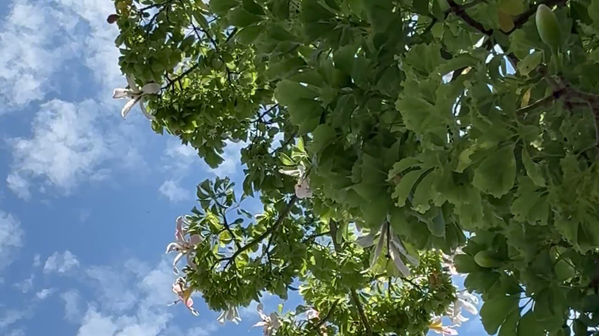
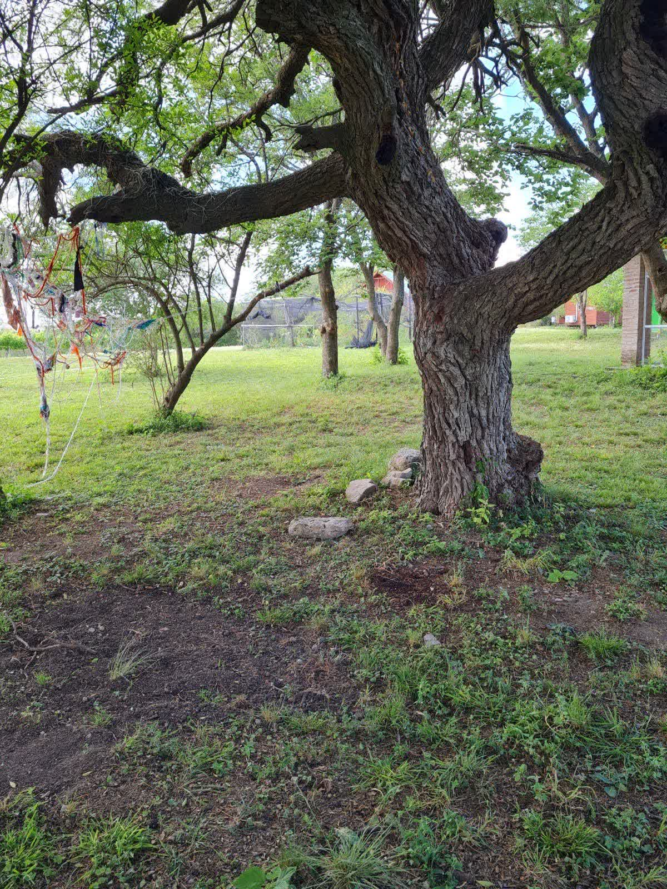
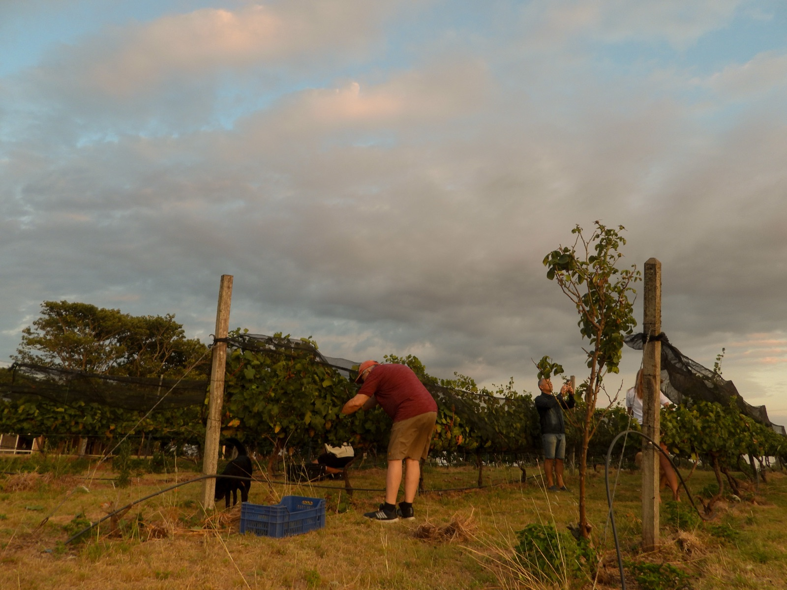

Senderismo
Excursiones guiadas por el bosque nativo, con guías especializados en flora y fauna de la región.
Descubrí el bosque nativo
Coordinamos el circuito con guías especializados de la zona, que te llevan por senderos a través del monte, donde nacen vertientes naturales de agua potable y pequeños arroyos. Un recorrido accesible para cualquier persona, donde vas a cruzarte con más de 350 especies de aves, ciervos, guazunchos y una flora autóctona increíble.
Cueva del Tigre
Formación natural icónica. Un lugar de leyendas e historias que parece otro mundo.
Bosque energético
Un espacio de 3x3m donde las brújulas dejan de funcionar. Visitado por grupos de yoga y meditación.
Flora y fauna nativa
Espinillos, ombúes centenarios, azucenas. Reconocimiento de plantas medicinales y avistaje de aves.
Vertientes y cascada
Vertientes naturales de agua potable, arroyos que nacen en el monte y rincones escondidos.


Trekking Nocturno Sensorial
Cuando cae el sol, el camino cambia. Los sonidos se intensifican. Las sombras cobran forma. Las leyendas despiertan.
- Recorrido guiado por el viñedo + degustación
- Parada consciente en el Bosque Energético
- Visita a la Cueva del Tigre bajo las estrellas
- Observación astronómica
- Activación de los cinco sentidos
- Cierre con choripanes y charla